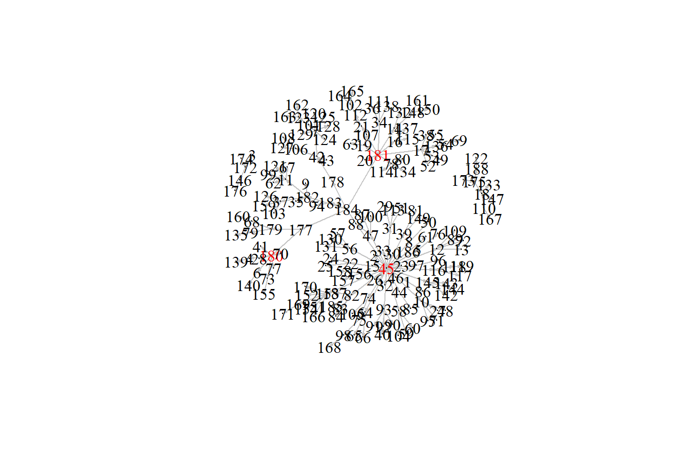

# adattábla létrehozása
measles <- rio::import(file = "adat/measles.csv")
head(measles) # az adattábla első 6 sora
#> from to
#> 1 45 1
#> 2 45 2
#> 3 172 3
#> 4 180 4
#> 5 45 5
#> 6 180 63 Fontos csúcsok
Egy hálózatban lényeges a kulcsfontosságú kapcsolatok és a fontos vagy befolyásos csúcsok azonosítása.
3.1 A fejezet fogalmai
- vonal
-
egymáshoz kapcsolódó élek tetszőleges sorozata
- zárt vonal
-
olyan vonal, ahol az első él kezdőcsúcsa megegyezik az utolsó él végpontjával
- séta
-
olyan vonal, amelyben minden él különböző
- út (path)
-
olyan vonal, amelyben minden csúcs (és így persze minden él is) különböző
- kör
-
olyan vonal, amelyben a kezdőpont megegyezik a végponttal, de ettől eltekintve minden pont különböző
- Hamilton kör
-
a gráf minden pontját tartalmazó kör
- Hamilton út
-
a gráf minden pontját tartalmazó út
- vonal / út hossza
-
a vonalon / úton szereplő élek száma
- hálózat átmérője
-
a hálózat leghosszabb útja
- centralitás (központiság)
-
a csúcs fontosságát leíró számszerű mutató
3.2 Irányított gráfok
A fejezetben használt {igraph} függvények:
is.directed()- a gráf irányítottságát vizsgáló függvényis.weighted()- a gráf súlyozottságát vizsgáló függvényhead_of()- minden olyan csúcs lekérdezése, amely a paraméterben megadott élek végpontjatail_of()- függvény a paraméterben szereplő élek kezdőpontját adja megincident()- azon élek listája, amelyek a paraméterben szereplő csúcsokat érinti
Könnyen létrehozhatunk irányított gráfot adattáblából. Egy gráfobjektum lehet irányított vagy irányítatlan és az élek lehetnek súlyozottak vagy súlyozatlanok.
Példaként a kanyaró terjedésének hálózatát fogjuk használni. Az adatok a németországi Hagelloch városából származnak 1861-ből. A hálózat minden egyes irányított éle azt jelzi, hogy egy gyermek megfertőződött kanyaróval, miután kapcsolatba került egy fertőzött gyermekkel.
Adatok beolvasása.
Hozzuk létre az igraph objektumot, vagyis a hálózatot.
library(igraph)
# igraph objektum létrehozása
g <- graph_from_data_frame(d = measles, directed = TRUE)Jelenítsük meg a hálózatot a plot() segítségével. Ezt a megjelenítést később javítani fogjuk. Hasznos lehet a hálózat megjelenítése az elemzés előtt. A hálózat láthatóságát javítja, ha kezdetben a csúcsméretet 0 (vertex.size = 0), az él nyíl mérete pedig 0,1 (edge.arrow.size = 0.2).
# induló megjelenés
plot(g,
vertex.label.color = "black",
edge.color = 'gray77',
vertex.size = 0,
edge.arrow.size = 0.2,
layout = layout_nicely(g))Vizsgáljuk meg, hogy a hálózat irányított vagy sem. Ehhez a is.directed() függvényt használjuk. A visszatérési érték TRUE vagy FALSE.
# a gráf irányított?
is.directed(g)
#> [1] TRUEAmennyiben a g igraph objektumot kiíratjuk a képernyőre, akkor is felismerhetjük, hogy irányított gráfról van szó. Egyrészt a nyilakkal reprezentált élek, másrészt az első sorban szereplő DN jelzi a gráf irányítottságát.
g # igrapgh objektum kiírása a képernyőre
#> IGRAPH f8e9827 DN-- 187 184 --
#> + attr: name (v/c)
#> + edges from f8e9827 (vertex names):
#> [1] 45 ->1 45 ->2 172->3 180->4 45 ->5 180->6 42 ->7
#> [8] 45 ->8 182->9 45 ->10 182->11 45 ->12 12 ->13 181->14
#> [15] 45 ->15 181->16 181->17 175->18 181->19 181->20 181->21
#> [22] 45 ->22 45 ->23 22 ->24 22 ->25 45 ->26 10 ->27 180->28
#> [29] 31 ->29 45 ->30 45 ->31 45 ->32 45 ->33 181->34 182->35
#> [36] 34 ->36 182->37 17 ->38 45 ->39 93 ->40 180->41 178->42
#> [43] 42 ->43 45 ->44 184->45 45 ->46 45 ->47 10 ->48 17 ->49
#> [50] 8 ->50 31 ->51 17 ->52 17 ->53 17 ->54 17 ->55 45 ->56
#> + ... omitted several edgesAmennyiben súlyozott éleket tartalmazó gráfról van szó, akkor az is.weighted() függvénnyel meggyőződhetünk ennek tényéről.
is.weighted(g) # a gráf élei súlyozottak
#> [1] FALSESúlyozott éleket tartalmaz az a gráf, amelynek az élei tartalmaznak weight attribútumot.
g2 <- g
# véletlen súlyok hozzárendelése
E(g2)$weight <- sample(x = c(1,2), size = gsize(g2), replace = T)
is.weighted(g2) # a gráf élei súlyozottak
#> [1] TRUEAz élek súlyozottsága a g2 igraph objektum kilistázásából is látható.
g2 # g2 kiírása
#> IGRAPH f8e9827 DNW- 187 184 --
#> + attr: name (v/c), weight (e/n)
#> + edges from f8e9827 (vertex names):
#> [1] 45 ->1 45 ->2 172->3 180->4 45 ->5 180->6 42 ->7
#> [8] 45 ->8 182->9 45 ->10 182->11 45 ->12 12 ->13 181->14
#> [15] 45 ->15 181->16 181->17 175->18 181->19 181->20 181->21
#> [22] 45 ->22 45 ->23 22 ->24 22 ->25 45 ->26 10 ->27 180->28
#> [29] 31 ->29 45 ->30 45 ->31 45 ->32 45 ->33 181->34 182->35
#> [36] 34 ->36 182->37 17 ->38 45 ->39 93 ->40 180->41 178->42
#> [43] 42 ->43 45 ->44 184->45 45 ->46 45 ->47 10 ->48 17 ->49
#> [50] 8 ->50 31 ->51 17 ->52 17 ->53 17 ->54 17 ->55 45 ->56
#> + ... omitted several edgesSúlyozott gráf megjelenítéséhez használjuk a edge.width = E(g2)$weight paramétert a plot() függvényben.
plot(g2,
vertex.label.color = "black",
edge.color = 'grey77',
vertex.size = 0,
edge.arrow.size = 0.2,
layout = layout_nicely(g),
edge.width = E(g2)$weight
)
3.2.1 Az élek végpontjai
Irányítatlan gráfok esetében, ha e egy él és az a, b csúcsok össze vannak kötve, akkor az a és b az e él végpontjai, míg irányított gráfban a->b irányított él esetén az a csúcs az e kezdőpontja (vagy töve) és b a végpontja (vagy feje).
Irányított gráfban a head_of() segítségével minden olyan csúcsot lekérdezhetünk, amely a paraméterben megadott élek végpontja. A tail_of() függvény a paraméterben szereplő élek kezdőpontját adja meg. A head_of() függvény tehát két argumentumot tartalmaz, az első a gráfobjektum, a második pedig az élek halmaza. Ha az összes élt el akarjuk érni, akkor az E(g)-t használjuk.
ho_g <- head_of(g, E(g)) # a gráf összes élének végpontja
ho_g
#> + 184/187 vertices, named, from f8e9827:
#> [1] 1 2 3 4 5 6 7 8 9 10 11 12 13 14 ...
#> [16] 16 17 18 19 20 21 22 23 24 25 26 27 28 29 ...
#> [31] 31 32 33 34 35 36 37 38 39 40 41 42 43 44 ...
#> [46] 46 47 48 49 50 51 52 53 54 55 56 57 58 59 ...
#> [61] 61 62 63 64 65 66 67 68 69 70 71 72 73 74 ...
#> [76] 76 77 78 79 80 81 82 83 84 85 86 87 88 89 ...
#> [91] 91 92 93 94 95 96 97 98 99 100 101 102 103 104...
#> [106] 106 107 108 109 110 111 112 113 114 115 116 117 118 119...
#> [121] 121 122 123 124 125 126 127 128 129 130 131 132 133 134...
#> [136] 136 137 138 139 140 142 143 144 145 146 147 148 149 150...
#> + ... omitted several verticesHasonlóan használhatjuk a tail_of() függvényt azon csúcsok meghatározására, amelyekből él indul ki:
to_g <- tail_of(g, E(g)) # a gráf összes élének kezdőpontja
to_g
#> + 184/187 vertices, named, from f8e9827:
#> [1] 45 45 172 180 45 180 42 45 182 45 182 45 12 181...
#> [16] 181 181 175 181 181 181 45 45 22 22 45 10 180 31 ...
#> [31] 45 45 45 181 182 34 182 17 45 93 180 178 42 45 ...
#> [46] 45 45 10 17 8 31 17 17 17 17 45 56 45 58 ...
#> [61] 186 11 19 45 64 64 11 179 54 180 10 12 180 45 ...
#> [76] 5 180 181 179 78 39 45 82 82 44 1 47 47 12 ...
#> [91] 93 93 45 183 10 97 45 64 11 47 7 21 37 58 ...
#> [106] 42 19 106 12 18 34 21 31 78 16 45 116 116 116...
#> [121] 11 188 7 7 7 37 106 7 7 56 56 14 18 78 ...
#> [136] 17 16 34 4 6 145 145 145 45 172 18 14 39 148...
#> + ... omitted several verticesÉrdekességként keressük meg azokat az éleket, amelyekből indul ki él, de egy él sem vezet. A setdiff() függvény a halmazelméleti különbséget valósítja meg, egészen pontosan a gráf összes élének kezdőpontjából (to_g) kivonjuk a gráf összes élének végpontját (ho_g). Ha a csomópontok címkéivel akarjuk elvégezni a műveletet, akkor a name argumentumot is használjuk a különbségképzés során.
# olyan csúcsok, amelyekbe nem vezet be él
setdiff(to_g$name, ho_g$name)
#> [1] "184" "174" "173"A fenti outputban látható, hogy 3 ilyen csúcsunk van. Amennyiben szeretnénk ezt a 3 csúcsot kiemelni a megjelenítés során, akkor a címkék színét állítsuk be.
# alapértelmezés szerint minden címkéjének színe legyen fekete
vlc <- rep("black", gorder(graph = g))
# a megfelelő csúcsok címkéjének színe legyen piros
vlc[V(g)$name %in% setdiff(to_g$name, ho_g$name)] <- "red"
plot(g2,
vertex.label.color = vlc,
edge.color = 'grey77',
vertex.size = 0,
edge.arrow.size = 0.2,
layout = layout_nicely(g)
)3.2.2 Adott csúcs éleinek azonosítása
Az egyes élek azonosítása is lehetséges. Megvizsgálhatjuk, hogy létezik-e él két csúcs között, valamint megkereshetjük az összes olyan csúcsot, amelyek bármelyik irányban kapcsolódnak egy adott csúcshoz.
Először ellenőrizzük le, hogy vezet-e él egyik, illetve másik irányban a 184-es csúcs és a 178-as csúcs között. A csúcsok indexelésekor szögletes zárójelet ([) használjuk és a csúcs nevét idézőjelbe kell tenni, még akkor is, ha az szám. Ha az indexelés eredménye 1 (IGAZ), akkor az azt jelzi, akkor vezet irányított él. Ha 0-t (FALSE) kapunk, akkor nem vezet irányított él.
# Van-e irányított él a 184-es csúcstól 178-as csúcshoz
g['184', '178']
#> [1] 1# Van-e irányított él a 178-as csúcstól 184-es csúcshoz
g['178', '184']
#> [1] 0Az incident() függvény segítségével azonosítjuk azokat az éleket, amelyek például a 184-es csúcsból bármelyik irányba mennek, vagy azokat, amelyek a 184-es csúcsból indulnak ki. Az első argumentum a gráf objektum, a második a vizsgálandó csúcs, a harmadik argumentum pedig a mód, amely az irányt jelzi.
# Az összes olyan él, amiben a 184-es csúcs szerepel
incident(g, '184', mode = "all")
#> + 6/184 edges from f8e9827 (vertex names):
#> [1] 184->45 184->182 184->181 184->178 184->183 184->177# Az összes olyan él, amely a 184-es csúcsból indul ki
incident(g, '184', mode = "out")
#> + 6/184 edges from f8e9827 (vertex names):
#> [1] 184->45 184->182 184->181 184->178 184->183 184->177# Az összes olyan él, amely a 184-es csúcsba vezet
incident(g, '184', mode = "in")
#> + 0/184 edges from f8e9827 (vertex names):3.2.2.1 Feladat
Hozzuk létre a következő gráfot, írassuk ki a szomszédsági mátrixát, a
degree()függvénnyel a fokszámokat, az átlagos fokszámot és adegree.distribution()függvénnyel a fokszámeloszlást.
Hozzuk létre a fenti irányított gráfot:
friends <- tribble(
~name1, ~name2,
1, 2,
3, 1,
3, 2,
2, 4
)
friends.mat <- as.matrix(friends)
gs1 <- graph.edgelist(friends.mat, directed = TRUE)
# A hálózat megjelenítése
plot(gs1)Szomszédsági mátrix:
as_adjacency_matrix(gs1)
#> 4 x 4 sparse Matrix of class "dgCMatrix"
#>
#> [1,] . 1 . .
#> [2,] . . . 1
#> [3,] 1 1 . .
#> [4,] . . . .V(gs1) # a csúcsok száma és megnevezése
#> + 4/4 vertices, from faa229f:
#> [1] 1 2 3 4
E(gs1) # az élek száma és az élek azonosítása csúcsokkal
#> + 4/4 edges from faa229f:
#> [1] 1->2 3->1 3->2 2->4
ecount(gs1) # élek száma
#> [1] 4
vcount(gs1) # csúcsok száma
#> [1] 4
is.directed(gs1) # irányított gráf?
#> [1] TRUEA csúcsok fokszáma, a bemenő és kimenő éleket külön-külön is számolva:
degree(gs1)
#> [1] 2 3 2 1
degree(gs1, mode = "all")
#> [1] 2 3 2 1
degree(gs1, mode = "in")
#> [1] 1 2 0 1
degree(gs1, mode = "out")
#> [1] 1 1 2 0
d_degree <- data.frame(degre_all=degree(gs1, mode = "all"),
degre_in=degree(gs1, mode = "in"),
degre_out=degree(gs1, mode = "out"))
d_degree
#> degre_all degre_in degre_out
#> 1 2 1 1
#> 2 3 2 1
#> 3 2 0 2
#> 4 1 1 0A fokszámok átlaga:
mean(degree(gs1))
#> [1] 2A fokszámeloszlás:
degree.distribution(gs1)
#> [1] 0.00 0.25 0.50 0.253.3 Csúcsok közötti kapcsolatok
A fejezetben használt {igraph} függvények:
neighbors()- szomszédos csúcsok feltárásafarthest_vertices()- a hálózat átmérőjét meghatározó út első és utolsó csúcsaget_diameter()- megmutatja az útvonalat a két egymástól legtávolabbi csúcs közöttdiameter()- a hálózat átmérőjeego()- azok a csúcsok, amelyek egy adott csúcstól \(N\) kapcsolaton belül elérhetők
A hálózatelemzés során a csúcsok közötti kapcsolatok mintázatának feltárása központi jelentőségű. Ennek egyik módja, hogy első lépésben azonosítjuk az egyes csúcsok szomszédos csúcsait, majd azt is meghatározhatjuk, hogy mely szomszédos csúcsokon osztoznak a nem összekapcsolt csúcsok. Ez utóbbi annak a lehetőségét mutatja meg, hogy két csúcsnak miként lehet közvetett kapcsolata más csúcsokon keresztül.
3.3.1 Szomszédok
A neighbors() függvény segítségével azonosíthatjuk azokat a csúcsokat, amelyek bármilyen módon kapcsolódnak például a 12-es csúcshoz, vagy azokat a csúcsokat, amelyek egy élt a 12-es csúcshoz irányítanak, és azokat is, amelyek a 12-es csúcsból indulnak.
# irányítottságtól függetlenül a 12 csúcs szomszédai
neighbors(g, '12', mode = "all")
#> + 5/187 vertices, named, from f8e9827:
#> [1] 45 13 72 89 109
# a 12-es csúcsba futó élek kiinduló csúcsai
neighbors(g, '12', mode = "in")
#> + 1/187 vertex, named, from f8e9827:
#> [1] 45
# a 12-es csúcsból kifelé vezető élek
neighbors(g, '12', mode = "out")
#> + 4/187 vertices, named, from f8e9827:
#> [1] 13 72 89 109Meghatározhatjuk azt is, hogy például a 42 és 124 csúcsoknak van-e közös szomszédjuk! Hozzunk létre egy n1 vektort azoknak a csúcsoknak, amelyekbe él vezet a 42-es csúcsból, és egy n2 vektort azoknak a csúcsoknak, amelyek egy élt a 124-es csúcshoz irányítanak. Ezután használjuk az intersection() függvényt, amely meghatározza, hogy vannak-e közös csúcsok az n1-ben és az n2-ben.
# az összes olyan csúcs, amely a 42-es csúcsból induló élen végpont és egyben a 124-es csúcshoz irányuló élek kezdőcsúcsa
n1 <- neighbors(g, '42', mode = 'out')
n2 <- neighbors(g, '124', mode = 'in')
intersection(n1, n2)
#> + 1/187 vertex, named, from f8e9827:
#> [1] 7Látható, hogy van egyetlen olyan csúcs (7), amelyen keresztül a 42-es csúcsból eljuthatunk a 124-es csúcsba.
# alapértelmezés szerint minden címkéjének színe legyen fekete
vlc <- rep("black", gorder(graph = g))
# a megfelelő csúcsok címkéjének színe legyen piros
vlc[V(g)$name %in% c('42', '7', '124')] <- "red"
plot(g2,
vertex.label.color = vlc,
edge.color = 'grey77',
vertex.size = 0,
edge.arrow.size = 0.2,
layout = layout_nicely(g)
)3.3.2 A csúcsok közötti távolságok
Egy hálózat összekapcsoltságának egyik mutatója lehet, ha megállapítjuk az összes csúcspár közötti utak hosszát. Az út egyszerűen a csúcsok közötti kapcsolatok láncolata. A két csúcs közötti élek száma a csúcsok közötti távolságot jelenti. Ha egy csúcs elérhető a szomszédjától, akkor a köztük lévő úthossz 1, vagyis az egymáshoz kapcsolódó csúcsok távolsága 1. Azok a csúcsok, amelyeknek közös szomszédjuk van, de nem kapcsolódnak egymáshoz, a távolságuk 2 és így tovább. Irányított hálózatokban az élek iránya is figyelembe vehető. Ha két csúcsot nem lehet elérni egymást követő irányított éleken keresztül, akkor a távolság végtelen.
A hálózatelemzés során általában az érdekel bennünket, hogy az adott hálózatban melyik a leghosszabb ilyen út. Ezt a hálózat átmérőjének is nevezik.
Elsőként vizsgáljuk meg a hálózat csúcsai közötti leghosszabb útvonalakat, majd azokat a csúcsokat keressük, amelyek egy adott csúcs \(n\) kapcsolatán belül vannak. A betegségátviteli hálózatok esetében (mint a példánkban szereplő kanyaró adatkészlet esetében) ez segít azonosítani, hogy milyen gyorsan terjed a betegség a hálózaton keresztül.
A hálózat leghosszabb útvonalának hosszát a farthest_vertices() függvény segítségével kérhetjük el.
# Melyik két csúcs van a legtávolabb egymástól a gráfban?
farthest_vertices(g)
#> $vertices
#> + 2/187 vertices, named, from f8e9827:
#> [1] 184 162
#>
#> $distance
#> [1] 5Az outputban megjelenik a megtalált út kezdő- és végpontja, valamint az út hossza is.
Az út hosszát a diameter() függvény külön is megmutatja.
# a hálózat átmérője
diameter(g)
#> [1] 5Magát az útvonalat is azonosíthatjuk a get_diameter() függvény segítségével. Ez az út összes csúcspontját tartalmazza, így esetünkben azt az utat mutatja, amely a legtávolabb lévő gyermekekhez vezet, akikhez a betegség eljutott a hálózaton keresztül.
# Megmutatja az útvonalat a két egymástól legtávolabbi csúcs között
get_diameter(g)
#> + 6/187 vertices, named, from f8e9827:
#> [1] 184 178 42 7 123 162Jelenítsük meg ezt az utat.
# alapértelmezés szerint minden címkéjének színe legyen fekete
vlc <- rep("black", gorder(graph = g))
# a megfelelő csúcsok címkéjének színe legyen piros
vlc[V(g)$name %in% get_diameter(g)$name] <- "red"
plot(g2,
vertex.label.color = vlc,
edge.color = 'grey77',
vertex.size = 0,
edge.arrow.size = 0.2,
layout = layout_nicely(g)
)3.3.3 N lépésben elérhető csúcsok azonosítása
Az ego() függvény segítségével azonosítani tudjuk az összes olyan csúcsot, amely az adott csúcsból maximum \(n\) lépésben elérhető.
Például az ego() segítségével keressük meg az összes olyan csúcsot, amely a 42-es csúcstól 2 távolságon belül elérhető, majd azokat, amelyek két távolságon belül elérhetik a 42-es csúcsot. Az ego() első argumentuma a gráfobjektum, a második argumentum a csúcsok közötti kapcsolatok maximális száma, a harmadik argumentum a kívánt csúcs, a negyedik argumentum pedig azt határozza meg, hogy kimenő vagy bejövő élről van szó.
# Azok a csúcsok, amelyek a 42-es csúcstól két kapcsolaton belül elérhetők.
ego(g, 2, '42', mode = 'out')
#> [[1]]
#> + 13/187 vertices, named, from f8e9827:
#> [1] 42 7 106 43 123 101 120 124 125 128 129 108 127
# Azok a csúcsok, amelyek két kapcsolaton belül elérhetik a 42-es csúcsot.
ego(g, 2, '42', mode = 'in')
#> [[1]]
#> + 3/187 vertices, named, from f8e9827:
#> [1] 42 178 184Azok a csúcsok, amelyek a 42-es csúcstól két kapcsolaton belül elérhetők.
# alapértelmezés szerint minden címkéjének színe legyen fekete
vlc <- rep("black", gorder(graph = g))
# a megfelelő csúcsok címkéjének színe legyen piros
vlc[V(g)$name %in% ego(g, 2, '42', mode = 'out')[[1]]$name] <- "red"
plot(g2,
vertex.label.color = vlc,
edge.color = 'grey77',
vertex.size = 0,
edge.arrow.size = 0.2,
layout = layout_nicely(g)
)Azok a csúcsok, amelyek két kapcsolaton belül elérhetik a 42-es csúcsot.
# alapértelmezés szerint minden címkéjének színe legyen fekete
vlc <- rep("black", gorder(graph = g))
# a megfelelő csúcsok címkéjének színe legyen piros
vlc[V(g)$name %in% ego(g, 2, '42', mode = 'in')[[1]]$name] <- "red"
plot(g2,
vertex.label.color = vlc,
edge.color = 'grey77',
vertex.size = 0,
edge.arrow.size = 0.2,
layout = layout_nicely(g)
)3.4 Fontos és befolyásos csúcsok
A fejezetben használt {igraph} függvények:
degree()- fokszám centralitás kiszámítása az egyes csúcsokrabetweenness()- közöttiség centralitás kiszámítása az egyes csúcsokracloseness()- közelség centralitás kiszámítása az egyes csúcsokramake_ego_graph()- részgráf készítése egy csúcstól adott távolságra lévő csúcsokkaldistances()- a legrövidebb út két csúcs között
A hálózatelemzésben különböző mérőszámok születtek a csúcsok fontosságának számszerűsítésére, ezeket centralitásnak vagy központiságnak nevezzük. Ezek segítségével olyan kérdésekre válaszolhatunk, hogy egy osztályközösségben ki a hangadó, mennyire értékes gey weboldal, mely gének törlése járhat hallos következménnyel egy génszabályozó hálózatban, mennyire kritikus az adott router egy internetes hálózatban.
Itt 3 centralitási mutatóról lesz szó:
- Fokszám centralitás (degree centrality)
- Közöttiség centralitás (betweenness centrality)
- Közelség centralitás (closeness centrality)
Számos módszer létezik annak meghatározására, hogy mely csúcsok lehetnek a legfontosabbak vagy a legbefolyásosabbak. Például fontosnak tarthatunk egy olyan csúcsot, amelynek sok kapcsolata van, azaz magas a fokszáma van. Azokat a csúcsokat még nagyobb befolyásúnak tekinthetjük, amelyek olyan más csúcsokhoz kapcsolódnak, amelyek maguk is erősen összekapcsolódnak a hálózatban. Ezek olyan csúcsok, amelyek nagy sajátvektor-centralitásúak. Számos más módszer is létezik a befolyás kiszámítására, beleértve a közelség és a laprangsorok központiságát. A következő gyakorlatban ezek közül kettőre fogsz összpontosítani: a mértékre és a közöttiségre.
3.4.1 Fokszám centralitás
A csúcs fontosságának talán legegyszerűbb mértéke a csúcs foka. Egy csúcs kifoka (out-degree) azoknak a csúcsoknak a száma, amelyekre egy csúcsnak kimenő éle van. A befok (in-degree) a többi egyedtől ide vezető élek száma. A kanyaróhálózatban azok az egyének, akik sok más egyedet megfertőznek, magas kifokkal rendelkeznek.
Érdekes kérdés lehet, hogy az egyének azonos mennyiségben fertőznek-e meg más gyerekeket, vagy vannak esetleg olyan kulcsfontosságú gyerekek is, akiknek magas a kifokuk, vagyis sok más gyereket is megfertőztek.
Számítsuk ki az egyes csúcsok kimenő fokát degree() függvény segítségével. Az első argumentum a hálózati gráf objektum, a második argumentum pedig a mód (out, in vagy all). A függvény kimenetét a g.outd objektumhoz rendeljük.
# Számítsuk ki az egyes csúcsok kimenő fokát
g.outd <- degree(g, mode = "out")
g.outd
#> 45 172 180 42 182 12 181 175 22 10 31 34 17 93 178 184
#> 30 2 7 3 4 4 8 2 2 4 3 3 7 4 1 6
#> 8 56 58 186 11 19 64 179 54 74 5 78 39 82 44 1
#> 1 3 3 1 4 2 3 2 1 2 1 3 2 4 1 1
#> 47 183 97 7 21 37 106 18 16 116 188 14 79 4 6 145
#> 3 1 1 7 2 3 2 3 2 3 1 2 1 1 1 3
#> 148 153 73 156 68 123 102 110 98 169 174 173 146 177 2 3
#> 2 6 1 2 1 2 2 1 1 1 1 1 1 2 0 0
#> 9 13 15 20 23 24 25 26 27 28 29 30 32 33 35 36
#> 0 0 0 0 0 0 0 0 0 0 0 0 0 0 0 0
#> 38 40 41 43 46 48 49 50 51 52 53 55 57 59 60 61
#> 0 0 0 0 0 0 0 0 0 0 0 0 0 0 0 0
#> 62 63 65 66 67 69 70 71 72 75 76 77 80 81 83 84
#> 0 0 0 0 0 0 0 0 0 0 0 0 0 0 0 0
#> 85 86 87 88 89 90 91 92 94 95 96 99 100 101 103 104
#> 0 0 0 0 0 0 0 0 0 0 0 0 0 0 0 0
#> 105 107 108 109 111 112 113 114 115 117 118 119 120 121 122 124
#> 0 0 0 0 0 0 0 0 0 0 0 0 0 0 0 0
#> 125 126 127 128 129 130 131 132 133 134 135 136 137 138 139 140
#> 0 0 0 0 0 0 0 0 0 0 0 0 0 0 0 0
#> 142 143 144 147 149 150 151 152 154 155 157 158 159 160 161 162
#> 0 0 0 0 0 0 0 0 0 0 0 0 0 0 0 0
#> 163 164 165 166 167 168 170 171 176 185 187
#> 0 0 0 0 0 0 0 0 0 0 0Tekintsük meg az összes egyedi kimenő fokot table() függvény segítségével a g.outd vektorobjektum alapján.
# gyakorisági táblázat
table(g.outd)
#> g.outd
#> 0 1 2 3 4 6 7 8 30
#> 125 21 16 12 6 2 3 1 1Látható, hogy van egy olyan gyerek, aki 30 más gyermeket fertőzött meg.
Készítsünk hisztogramot a kimenő fokokról a hist() függvény segítségével a g.outd vektorobjektum alapján.
# Készítsünk hisztogramot a kimenő fokokról
hist(g.outd, breaks = 30)Határozzuk meg, hogy a g.outd vektorobjektumon a which.max() függvény segítségével melyik csúcsnak van a legmagasabb kimenő foka a hálózatban.
# Keresse meg azt a csúcsot, amelyiknek a maximális kimenő foka van
which.max(g.outd)
#> 45
#> 1Jelenítsük meg ábrán is.
# alapértelmezés szerint minden címkéjének színe legyen fekete
vlc <- rep("black", gorder(graph = g))
# a megfelelő csúcsok címkéjének színe legyen piros
vlc[V(g)$name %in% '45'] <- "red"
plot(g2,
vertex.label.color = vlc,
edge.color = 'grey77',
vertex.size = 0,
edge.arrow.size = 0.2,
layout = layout_nicely(g)
)
Jelenítsük meg a példa kedvéért az első három legmagasabb fokszámmal rendelkező csúcsot.
# alapértelmezés szerint minden címkéjének színe legyen fekete
vlc <- rep("black", gorder(graph = g))
# a megfelelő csúcsok címkéjének színe legyen piros
vlc[V(g)$name %in% names(sort(degree(g, mode = "out"), decreasing = T)[1:3])] <- "red"
plot(g2,
vertex.label.color = vlc,
edge.color = 'grey77',
vertex.size = 0,
edge.arrow.size = 0.2,
layout = layout_nicely(g)
)
3.4.2 Közöttiség centralitás
Egy adott csúcs fontosságának másik mércéje a közöttiség centralitás. A mutató kifejezi, hogy egy csúcs milyen gyakran fekszik a hálózat bármely két csúcsa közötti legrövidebb úton. Könnyen elképzelhető, hogy egy ilyen csúcs mennyire kritikus a hálózaton keresztüli információáramlás szempontjából. A nagy közöttiség centralitással rendelkező egyének kulcsfontosságú hidak a hálózat különböző részei között. A kanyaróátviteli hálózatunkban magas értékkel rendelkeznek azok a gyerekek, akik központi szerepet játszottak a betegség átvitelében a hálózat más részeire.
Határozzuk meg a közöttiség centralitás értékét minden csúcsra a betweenness() függvény segítségével. Az argumentumban meg kell adnunk, hogy most irányított hálózatról van szó: directed = TRUE. Az eredményt mentsük el a g.b objektumba.
# Közöttiség centralitás minden csúcsra
g.b <- betweenness(g, directed = TRUE)
g.b
#> 45 172 180 42 182 12 181 175 22 10 31 34 17 93 178 184
#> 89 3 20 28 11 8 34 7 4 8 6 6 16 8 15 0
#> 8 56 58 186 11 19 64 179 54 74 5 78 39 82 44 1
#> 2 6 6 2 8 4 8 8 3 4 2 6 4 8 2 2
#> 47 183 97 7 21 37 106 18 16 116 188 14 79 4 6 145
#> 6 1 2 27 8 6 6 8 4 6 2 8 3 3 3 6
#> 148 153 73 156 68 123 102 110 98 169 174 173 146 177 2 3
#> 6 14 3 4 3 8 6 3 3 3 0 0 2 16 0 0
#> 9 13 15 20 23 24 25 26 27 28 29 30 32 33 35 36
#> 0 0 0 0 0 0 0 0 0 0 0 0 0 0 0 0
#> 38 40 41 43 46 48 49 50 51 52 53 55 57 59 60 61
#> 0 0 0 0 0 0 0 0 0 0 0 0 0 0 0 0
#> 62 63 65 66 67 69 70 71 72 75 76 77 80 81 83 84
#> 0 0 0 0 0 0 0 0 0 0 0 0 0 0 0 0
#> 85 86 87 88 89 90 91 92 94 95 96 99 100 101 103 104
#> 0 0 0 0 0 0 0 0 0 0 0 0 0 0 0 0
#> 105 107 108 109 111 112 113 114 115 117 118 119 120 121 122 124
#> 0 0 0 0 0 0 0 0 0 0 0 0 0 0 0 0
#> 125 126 127 128 129 130 131 132 133 134 135 136 137 138 139 140
#> 0 0 0 0 0 0 0 0 0 0 0 0 0 0 0 0
#> 142 143 144 147 149 150 151 152 154 155 157 158 159 160 161 162
#> 0 0 0 0 0 0 0 0 0 0 0 0 0 0 0 0
#> 163 164 165 166 167 168 170 171 176 185 187
#> 0 0 0 0 0 0 0 0 0 0 0Ábrán is vizsgáljuk meg a közöttiség centralitás pontszámok eloszlását a hist() függvény segítségével.
# Hisztogram közöttiség centralitásra
hist(g.b, breaks = 80)A plot() segítségével elkészíthetjük a hálózat diagramját a közöttiségi pontszámok alapján. A csúcscímkék megjelenését NA-val nyomjuk el. A csúcsméret attribútum induljon 1-ről, plusz a g.b közöttiségi pontszámok négyzetgyöke. A négyzetgyök függvényre azért van szükség (az egyszerű összegzés helyett), mert ebben a hálózatban óriási különbségek vannak a közöttiségi pontszámok között, a pontszámok ilyen módon történő normalizálása biztosítja, hogy minden csomópont áttakinthető maradjon, de relatív fontosságuk továbbra is azonosítható legyen.
# ábra a közöttiségi mutató szemléltetésével
plot(g,
vertex.label = NA,
edge.color = 'black',
vertex.size = sqrt(g.b)+1,
edge.arrow.size = 0.05,
layout = layout_nicely(g))A hagyományos megjelenítéssel is emeljük ki a 3 legnagyobb közöttiségi mutatóval rendelkező csúcsot.
# alapértelmezés szerint minden címkéjének színe legyen fekete
vlc <- rep("black", gorder(graph = g))
# a megfelelő csúcsok címkéjének színe legyen piros
vlc[V(g)$name %in% names(sort(betweenness(g, directed = T), decreasing = T)[1:3])] <- "red"
plot(g2,
vertex.label.color = vlc,
edge.color = 'grey77',
vertex.size = 0,
edge.arrow.size = 0.2,
layout = layout_nicely(g)
)3.4.3 Közelség centralitás
A közelségi mérőszám az összes többi csúcshoz való közelséggel ragadja meg a központiságot, vagyis az a “központi” csúcs, amely sok más csúcshoz “közel” van. A standard megközelítés szerint kiszámoljuk egy csúcs összesített távolságát az összes többi csúcstól, majd vesszük az összeg reciprokát.
A közelségi mutatót a closeness() függvénnyel számítjuk ki, amelynek első paramétere a gráf, a második pedig a mode=, amelynek csak irányított gráfok esetén van jelentősége. Alapértelmezett értéke out, amely irányított gráfban a csúcsból kivezető élek segítségével méri csak a többi csúcshoz vezető élek távolságát. A legtöbbször erre van szükségünk, jelen esetben is.
# Közelségi centralitás
g.c <- closeness(g, mode = "out")
g.c
#> 45 172 180 42 182
#> 0.006666667 0.250000000 0.076923077 0.037037037 0.055555556
#> 12 181 175 22 10
#> 0.250000000 0.015384615 0.076923077 0.500000000 0.250000000
#> 31 34 17 93 178
#> 0.333333333 0.333333333 0.111111111 0.250000000 0.023809524
#> 184 8 56 58 186
#> 0.002070393 1.000000000 0.333333333 0.333333333 1.000000000
#> 11 19 64 179 54
#> 0.250000000 0.500000000 0.200000000 0.166666667 1.000000000
#> 74 5 78 39 82
#> 0.500000000 1.000000000 0.333333333 0.500000000 0.250000000
#> 44 1 47 183 97
#> 1.000000000 1.000000000 0.333333333 1.000000000 1.000000000
#> 7 21 37 106 18
#> 0.090909091 0.166666667 0.333333333 0.500000000 0.200000000
#> 16 116 188 14 79
#> 0.500000000 0.333333333 1.000000000 0.166666667 1.000000000
#> 4 6 145 148 153
#> 1.000000000 1.000000000 0.333333333 0.500000000 0.125000000
#> 73 156 68 123 102
#> 1.000000000 0.500000000 1.000000000 0.500000000 0.500000000
#> 110 98 169 174 173
#> 1.000000000 1.000000000 1.000000000 0.125000000 0.047619048
#> 146 177 2 3 9
#> 1.000000000 0.028571429 NaN NaN NaN
#> 13 15 20 23 24
#> NaN NaN NaN NaN NaN
#> 25 26 27 28 29
#> NaN NaN NaN NaN NaN
#> 30 32 33 35 36
#> NaN NaN NaN NaN NaN
#> 38 40 41 43 46
#> NaN NaN NaN NaN NaN
#> 48 49 50 51 52
#> NaN NaN NaN NaN NaN
#> 53 55 57 59 60
#> NaN NaN NaN NaN NaN
#> 61 62 63 65 66
#> NaN NaN NaN NaN NaN
#> 67 69 70 71 72
#> NaN NaN NaN NaN NaN
#> 75 76 77 80 81
#> NaN NaN NaN NaN NaN
#> 83 84 85 86 87
#> NaN NaN NaN NaN NaN
#> 88 89 90 91 92
#> NaN NaN NaN NaN NaN
#> 94 95 96 99 100
#> NaN NaN NaN NaN NaN
#> 101 103 104 105 107
#> NaN NaN NaN NaN NaN
#> 108 109 111 112 113
#> NaN NaN NaN NaN NaN
#> 114 115 117 118 119
#> NaN NaN NaN NaN NaN
#> 120 121 122 124 125
#> NaN NaN NaN NaN NaN
#> 126 127 128 129 130
#> NaN NaN NaN NaN NaN
#> 131 132 133 134 135
#> NaN NaN NaN NaN NaN
#> 136 137 138 139 140
#> NaN NaN NaN NaN NaN
#> 142 143 144 147 149
#> NaN NaN NaN NaN NaN
#> 150 151 152 154 155
#> NaN NaN NaN NaN NaN
#> 157 158 159 160 161
#> NaN NaN NaN NaN NaN
#> 162 163 164 165 166
#> NaN NaN NaN NaN NaN
#> 167 168 170 171 176
#> NaN NaN NaN NaN NaN
#> 185 187
#> NaN NaNNe felejtsük, hogy közelségi mutató esetén a kisebb érték jelenti a nagyobb fontosságot. Emeljük ki a három befolyásos csúcsot, amelyet a közelségi mutató alapján határozunk meg.
# alapértelmezés szerint minden címkéjének színe legyen fekete
vlc <- rep("black", gorder(graph = g))
# a megfelelő csúcsok címkéjének színe legyen piros
vlc[V(g)$name %in% names(sort(closeness(g, mode = "out"))[1:3])] <- "red"
plot(g2,
vertex.label.color = vlc,
edge.color = 'grey77',
vertex.size = 0,
edge.arrow.size = 0.2,
layout = layout_nicely(g)
)3.4.3.1 Feladat
Készítsük el a következő irányított gráfot.
- Vizsgáljuk meg a gráf irányítottságát és súlyozottságát.
- Tárjuk fel a fokszámokat, vegyük figyelembe a kifokokat és a befokokat is.
- Vizsgáljuk meg, hogy van-e él A és E kozött.
- Határozzuk meg az összes olyan élt, amely A-ból indul, vagy A-ba vezet.
- Határozzuk meg az összes kezdőcsúcsot a teljes hálózatban.
- Határozzuk meg az F összes szomszédját.
- Határozzuk meg az F és D összes közös szomszédját.
- Határozzuk meg a leghosszabb utat a gráfban. Emeljük ki ábrán.
- Határozzuk meg az F-től legfeljebb 2 távolságra lévő csúcsokat. Emeljük ki ábrán.
- Számoljuk ki a fokszám, közöttiségi és közelségi centralitást.
Hozzuk létre a fenti irányított gráfot. Figyeljünk a színezésre is:
gs1 <- graph_from_literal(B--+A--+E--+H--+F--+G,
I--+F,
F--+E,
F--+A,
J--+D--+A,
K--+D,
L--+C--+A)
V(gs1)$color <- "#FE8484"
plot(gs1,
vertex.label.color = "black",
vertex.label.cex = .9,
edge.color = 'black',
vertex.size = 18,
edge.arrow.size = .5,
layout = layout_nicely(gs1))Feltárjuk a fokszámokat:
d_degree <- data.frame(degre_all=degree(gs1, mode = "all"),
degre_in=degree(gs1, mode = "in"),
degre_out=degree(gs1, mode = "out"))
d_degree
#> degre_all degre_in degre_out
#> B 1 0 1
#> A 5 4 1
#> E 3 2 1
#> H 2 1 1
#> F 5 2 3
#> G 1 1 0
#> I 1 0 1
#> J 1 0 1
#> D 3 2 1
#> K 1 0 1
#> L 1 0 1
#> C 2 1 1Vizsgáljuk meg, hogy van-e él A és E kozött:
gs1['A', 'E'] # van él?
#> [1] 1Határozzuk meg az összes olyan élt, amely A-ból indul, vagy A-ba vezet.
incident(gs1, 'A', mode = "all")
#> + 5/13 edges from fc82d6c (vertex names):
#> [1] B->A A->E F->A D->A C->AHatározzuk meg az összes kezdőcsúcsot a teljes hálózatban:
tail_of(graph = gs1, es = E(gs1))
#> + 13/12 vertices, named, from fc82d6c:
#> [1] B A E H F F F I J D K L CHatározzuk meg az F összes szomszédját:
neighbors(gs1, "F", mode = "all")
#> + 5/12 vertices, named, from fc82d6c:
#> [1] A E H G IHatározzuk meg az F és D összes közös szomszédját.
x <- neighbors(gs1, "F", mode = "all")
y <- neighbors(gs1, "D", mode = "all")
intersection(x, y)
#> + 1/12 vertex, named, from fc82d6c:
#> [1] AHatározzuk meg a leghosszabb utat a gráfban:
farthest_vertices(gs1)
#> $vertices
#> + 2/12 vertices, named, from fc82d6c:
#> [1] J G
#>
#> $distance
#> [1] 6
get_diameter(gs1)
#> + 7/12 vertices, named, from fc82d6c:
#> [1] J D A E H F GEmeljük ki a leghosszabb utat a gráfban:
path <- shortest_paths(graph = gs1, from = farthest_vertices(gs1)$vertices[1],
to = farthest_vertices(gs1)$vertices[2], output = "both")
E(gs1)$color <- ifelse(unlist(E(gs1)) %in% unlist(path$epath), 'blue', 'black')
plot(gs1,
vertex.label.color = "black",
vertex.label.cex = 0.9,
vertex.size = 18,
edge.arrow.size = .5,
layout = layout_nicely(gs1))Határozzuk meg az F-től legfeljebb 2 távolságra lévő csúcsokat:
ego(gs1, 2, 'F', mode = 'all')
#> [[1]]
#> + 9/12 vertices, named, from fc82d6c:
#> [1] F A E H G I B D CEmeljük ki az F-től legfeljebb 2 távolságra lévő csúcsokat:
# alapértelmezés szerint minden címkéjének színe legyen fekete
vlc <- rep("black", vcount(graph = gs1))
# a megfelelő csúcsok címkéjének színe legyen piros
vlc[unlist(V(gs1)) %in% unlist(ego(gs1, 2, 'F', mode = 'all'))] <- "white"
plot(gs1,
vertex.label.color = vlc,
vertex.label.cex = 0.9,
edge.color = 'black',
vertex.size = 18,
edge.arrow.size = .5,
layout = layout_nicely(gs1))Számoljuk ki a fokszám, közöttiségi és közelségi centralitást:
degree(graph = gs1)
#> B A E H F G I J D K L C
#> 1 5 3 2 5 1 1 1 3 1 1 2
betweenness(graph = gs1, directed = T)
#> B A E H F G I J D K L C
#> 0 24 23 17 16 0 0 0 10 0 0 5
round(betweenness(graph = gs1, directed = T, normalized = T), 2)
#> B A E H F G I J D K L C
#> 0.00 0.22 0.21 0.15 0.15 0.00 0.00 0.00 0.09 0.00 0.00 0.05
closeness(graph = gs1, mode = "out")
#> B A E H F ...
#> 0.06666667 0.10000000 0.11111111 0.14285714 0.20000000 ...
#> I J D K L ...
#> 0.10000000 0.04761905 0.06666667 0.04761905 0.04761905 0.0666...3.4.4 Fontos csomópontok és élek megjelenítése
A kanyaró adatkészlettel kapcsolatos egyik probléma az, hogy három személyről nincs információ arról, hogy ki fertőzte meg őket. Úgy tűnik, hogy ezen egyedek egyike (184-es csúcs) végső soron felelős a betegség sok más egyedre való terjesztéséért (a legkisebb a közelségi mutatója), még akkor is, ha nem fertőzött meg közvetlenül túl sok egyedet. Mivel azonban a 184-es csúcsnak nincs bejövő éle a hálózatban, úgy tűnik, hogy kicsi a közöttiségi mutatója.
# a 10 legbefolyásosabb csúcs a fokszám centralitás alapján
sort(degree(g, mode = "out"), decreasing = T)[1:10]
#> 45 181 180 17 7 184 153 182 12 10
#> 30 8 7 7 7 6 6 4 4 4# a 10 legbefolyásosabb csúcs a közöttiség centralitás alapján
sort(betweenness(g, directed = T), decreasing = T)[1:10]
#> 45 181 42 7 180 17 177 178 153 182
#> 89 34 28 27 20 16 16 15 14 11# a 10 legbefolyásosabb csúcs a közelség centralitás alapján
sort(closeness(g, mode = "out"))[1:10]
#> 184 45 181 178 177
#> 0.002070393 0.006666667 0.015384615 0.023809524 0.028571429
#> 42 173 182 180 175
#> 0.037037037 0.047619048 0.055555556 0.076923077 0.076923077A 184-es csúcs fontosságának feltárásának egyik módja az, ha vizualizáljuk az ettől az egyéntől kilépő kapcsolatok távolságait. Készítsünk ábrát, amely ezeket a távolságokat vizualizálja a legkorábban dokumentált betegtől (index eset).
A make_ego_graph() függvény segítségével létrehozhatjuk a hálózatunk azon részhalmazát, amely a 184-es csúcshoz kapcsolódó csúcsokból áll. Az első argumentum az eredeti g gráf. A második paraméter a kapcsolatok maximális száma, amelyet a diameter() segítségével állítunk a hálózat átmérőjére. A harmadik paraméter a kívánt csúcs, amely most a 184. Az utolsó argumentum a mód, amely ebben az esetben iránytól függetlenül minden csatlakozást engedélyez.
# részgráf készítése
g184 <- make_ego_graph(graph = g, order = diameter(g), nodes = '184', mode = "all")[[1]]Jelenítsük meg a kapott részgráfot.
plot(g184,
vertex.label.color = "black",
edge.color = 'gray77',
vertex.size = 0,
edge.arrow.size = 0.2,
layout = layout_nicely(g184))Hozzunk létre egy dists objektumot, amely minden csúcs távolságát tartalmazza a 184-es csúcstól. Használjuk a distances() függvényt ennek kiszámításához.
# távolságokat tartalmazó objektum a 184 csúcstól
dists <- distances(g184, "184")
dists
#> 45 180 42 182 12 181 22 10 31 34 17 93 178 184 8 56 58 18...
#> 184 1 2 2 1 2 1 2 2 2 2 2 2 1 0 2 2 2 ...
#> 19 64 179 54 74 5 78 39 82 44 1 47 183 97 7 21 37 106 16 116
#> 184 2 2 2 3 2 2 2 2 2 2 2 2 1 2 3 2 2 3 2 2
#> 14 79 4 6 145 148 153 73 156 68 123 102 98 169 177 2 9 13 15
#> 184 2 3 3 3 2 3 2 3 2 3 4 3 3 3 1 2 2 3 2
#> 20 23 24 25 26 27 28 29 30 32 33 35 36 38 40 41 43 46 48 ...
#> 184 2 2 3 3 2 3 3 3 2 2 2 2 3 3 3 3 3 2 3 ...
#> 51 52 53 55 57 59 60 61 62 63 65 66 67 69 70 71 72 75 76 ...
#> 184 3 3 3 3 3 3 3 3 3 3 3 3 3 4 3 3 3 3 3 ...
#> 81 83 84 85 86 87 88 89 90 91 92 94 95 96 99 100 101 103 104
#> 184 3 3 3 3 3 3 3 3 3 3 3 2 3 3 3 3 4 3 3
#> 105 107 108 109 111 112 113 114 115 117 118 119 120 121 124
#> 184 3 3 4 3 3 3 3 3 3 3 3 3 4 3 4
#> 125 126 127 128 129 130 131 132 134 135 136 137 138 139 140
#> 184 4 3 4 4 4 3 3 3 3 4 3 3 3 4 4
#> 142 143 144 149 150 151 152 154 155 157 158 159 160 161 162
#> 184 3 3 3 3 4 3 3 3 4 3 3 3 4 4 5
#> 163 164 165 166 168 170 171 185 187
#> 184 5 4 4 3 4 3 4 3 3Hozzunk létre egy színpalettát, amely összesen hat színt tartalmaz. Az index esetnek is biztosítsunk színt (fekete), majd az egyes távolságoknak is adjunk egy-egy színt (tudjuk, a maximális távolság 5, ezért van szükség összesen hat színre). A célunk az, hogy az azonos távolságra lévő csúcsok azonos színnel legyenek ábrázolva, az index eset színe pedig legyen fekete.
# színpaletta az egyes távolságoknak, plusz a 184-es csúcsnak
colors <- c("black", "red", "orange", "blue", "dodgerblue", "cyan")Adjuk meg a csúcsok color attribútumát, amely épp a 184-es csúcstól való távolságnak megfelelő színkód legyen. Tudjuk, hogy a dists objektumban a legkisebb érték 0 (ez épp a 184-es csúcs távolsága önmagától), legnagyobb értéke pedig 5. Ennek megfelelően a colors[dists+1] indexelés segítségével épp a megfelelő 6 színkódot tudjuk elérni a színpalettából.
# Set color attribute to vertices of network g184.
V(g184)$color <- colors[dists+1]A plot() segítségével már könnyen megjeleníthetjük a gráfot. A csúcscímke legyen minden esetben a távolság (dists). Adjunk ábracímet is main= argumentum segítségével.
# a 184-es esettől (index eset) kinduló részgráf megjelenítése a távolságok kiemelésével
plot(g184,
vertex.label = dists,
vertex.label.color = "white",
vertex.label.cex = .8,
edge.color = 'black',
vertex.size = 8,
edge.arrow.size = .05,
main = "Távolságok az index esettől (184)"
)